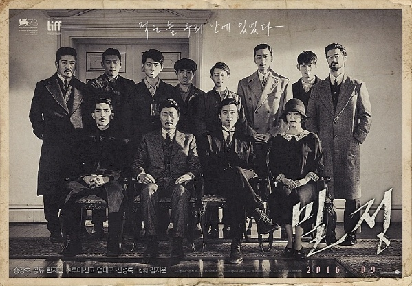

밀정
개봉일: 2016년 9월 7일 감독: 김지운 배급사: 워너 브라더스 작곡가: 모그 각본: 김지운, 이지민, 박종대
1920년대 일제강점기.조선인 출신 일본경찰 이정출(송강호)은 무장독립운동 단체 의열단의 뒤를 캐라는 특명으로의열단의 리더 김우진(공유)에게 접근하고, 한 시대의 양 극단에 서 있는 두 사람은서로의 정체와 의도를 알면서도 속내를 감춘 채 가까워진다.출처를 알 수 없는 정보가 쌍방간에 새어나가고 누가 밀정인지 알 수 없는 가운데,의열단은 일제의 주요 시설을 파괴할 폭탄을 경성으로 들여오기 위해,그리고 일본 경찰은 그들을 쫓아 모두 상해에 모인다. 잡아야만 하는 자들과 잡힐 수 없는 자들 사이,자신의 목표를 위해 서로를 이용하려는 암투와 회유,교란 작전이 숨가쁘게 펼쳐지는 긴장감 속에서폭탄을 실은 열차는 국경을 넘어 경성으로 향하는데…
#의열단